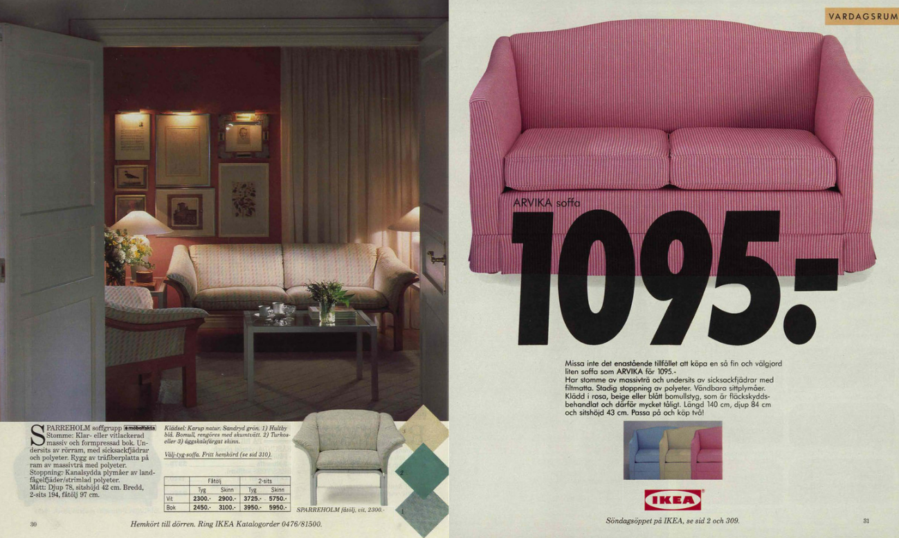
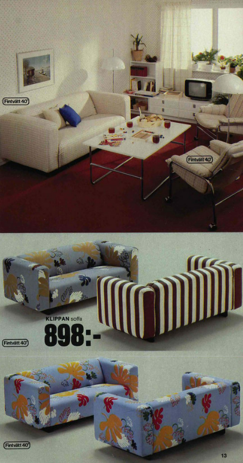
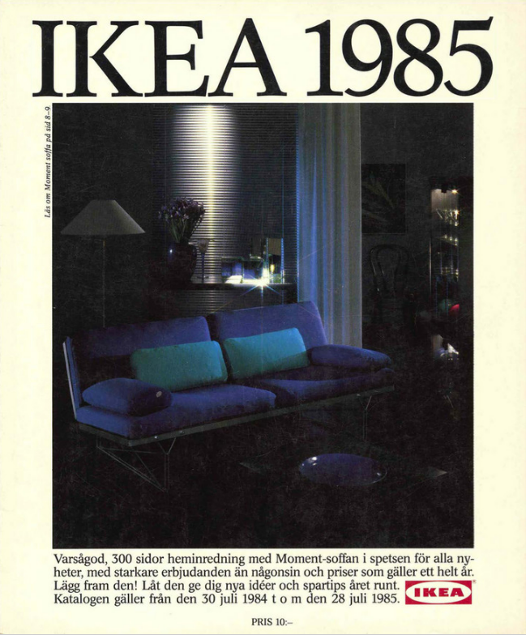
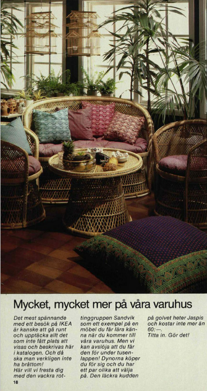

I really enjoy the layout of this page purely because of how
balanced and asymetrical it is!
Technology Baby!




Bright, functional furniture defined IKEA's global expansion in the 80s.


Interiors became more experimental, blending bold colors with everyday practicality.

IKEA focused on affordability and adaptability in this era.

The 1980s embraced playful experimentation in furniture and interiors.